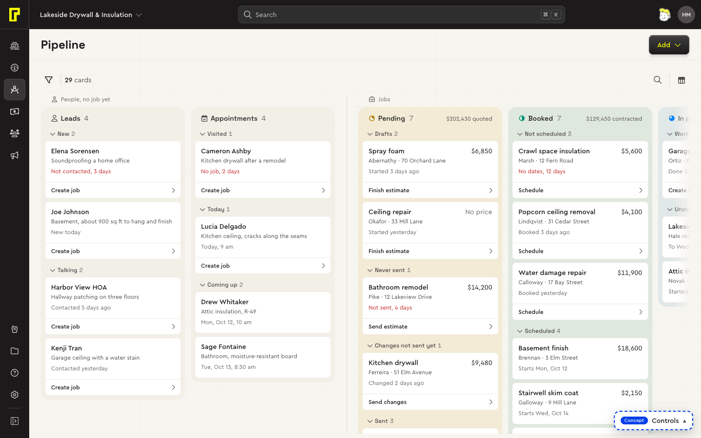
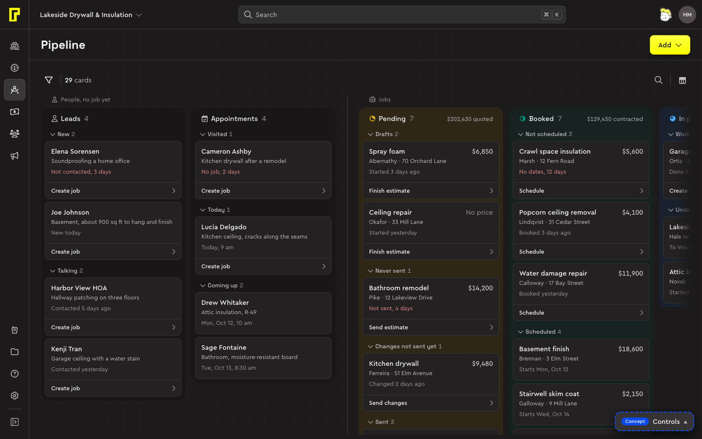
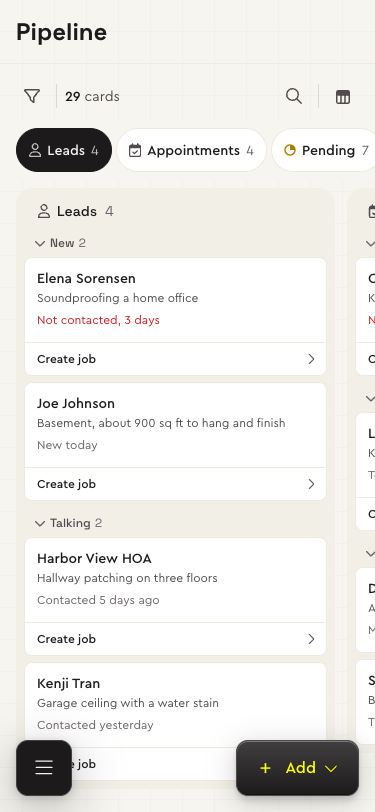
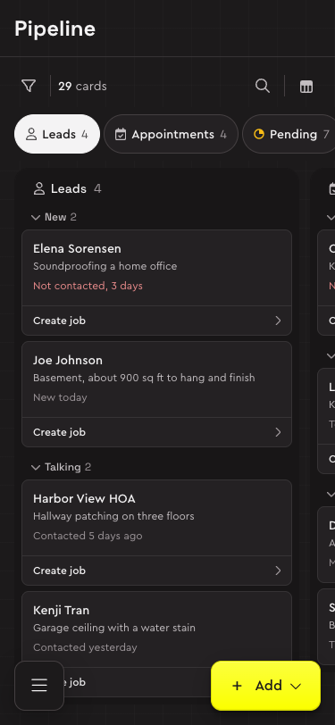

Bolster's Pipeline (Jobs → Pipeline, ~/pipeline) is a board of stages. The system's board runs from a lead's first enquiry to the invoice being paid, and says which cards are people, which are jobs and which are invoices, because they're different records that move in different ways.




Try it: the pipeline concept, with made-up data that shares the calendar's people and jobs.
Who it's for
Whoever follows the company's work from enquiry to payment: what came in, who needs a visit, which estimates haven't gone out, which jobs are booked but not scheduled, who owes money. Who may see the money is open (assumed: everyone with access to estimates).
Parts
| Part | What it holds | Built from |
|---|---|---|
| Page header | Pipeline, and Add with a chevron, opening Lead or Job. On phones the floating + opens the same as a sheet. | App shell, Menu |
| Toolbar | On the page, as Tasks': Add filter (People) as an icon, a rule, the count (“4 of 29 cards”); the search as a button on the right, then display settings. A set filter is a chip on the row below. | Toolbar, Search field, Chip |
| The board | Three kinds, each named over its columns with a seam before the next: People (Leads, Appointments), Jobs (Pending, Booked, In progress), Invoices (Getting paid). Lost, the last column, hidden until display settings show it. | Drafts, in the concept |
| A column | A faint tint with no frame, the stage's status colour mixed in (the people's stages neutral). Its head is one line: the stage's mark or icon, its name, count and what its money adds up. Folding groups inside, Bolster's sub-statuses. | Draft, with Badge marks |
| A card | A person (their name, what they asked for), a job (its name, client, money) or an invoice (its client, number and job, amount); how long it's been there, red when stuck; its next step. | Draft |
| Summary and dialogs | A card's summary beside it (a sheet on phones), and the short dialogs a stage asks with. | Popover, Dialog, Toast |
Patterns: Drag and drop, Filtering, Nested menus, Opening records, Page scrolling.
Behaviour
Cards move through their stages on the board: a card's next step is on it, a drag moves it, a drop that needs something asks first, and every change says so in a toast with Undo (I20).
| What | How |
|---|---|
| Opening | A job's card opens the job, as a list's row does. Its summary is Quick look, an icon at the card's top right (on hover or focus, always on touch). A lead's or an invoice's card opens its summary. |
| The next step | On every card, always shown, the stage's own verb: Create job, Send estimate, Mark as booked, Schedule, Mark as started, Invoice, Record payment. Some act at once with Undo; some ask in a short dialog first. |
| Moving | With a mouse or pen, drag a card one stage either way. A dark tag says what the drop would do (“Create its job, in Pending”) or why it can't (“One stage at a time: Booked first”). A slot the card's size opens where it will land, the cards easing apart for it (D121). Escape cancels. Invoices don't move by dragging. |
| Crossing kinds | Create job turns a person into a job (the person leaves Leads). Create invoice makes the final invoice from Work done (the job leaves the board) or a progress one while it's underway (the job stays). Both ask first, both have Undo. |
| Losing | A lead, an appointment or a pending job dropped on Lost (or Mark as lost) asks why, one of five reasons. Reopen puts it back where it was. |
| By keyboard and on phones | The summary's Move to lists only the stages the card can go to, then Move: the same dialogs, toast and Undo. |
| A column's list | Pointing at a column's head, or tabbing into it, puts View in list in the place of its mark: the stage's records in the table, filtered to it (D117). |
| Finding | People and the search narrow every column at once, Lost too; the columns' counts and money follow. |
| Display settings | Columns, Column totals, Card size (Comfortable or Compact), Card details (price, owner, time, next step), Group by (Status, Owner, None), then Fold all and Unfold all. All remembered in the browser (D105). |
| Scrolling | The page scrolls down, the board sideways, with a scrollbar at the window's foot from 768 wide. The toolbar goes as you scroll down and comes back up; each column's head stays at the top of its column (D128). |
| Phones | One stage at a time: tabs with counts, a swipe or a tab moves between them. No dragging: Move to in the summary sheet. |
Principles
- Three kinds of record, said plainly. The cards look what they are. This replaces the research's Selling and Doing split: leads and jobs being different records matters more.
- One kind becomes the next in one step. Create job asks only for the job's name and makes a draft estimate.
- Stages are shapes, and faintly a colour. The jobs' stages carry the job list's marks, a quarter at a time: Pending a quarter, Booked half, In progress three quarters. People's and invoices' stages carry an icon.
- Red means stuck, and says why: “No reply for 9 days”. Limits are assumed until settings have them (a new lead 2 days, an estimate never sent 3, a sent one 7…).
- Sub-statuses are groups inside their stage, what needs doing first; within a group, the date's order, never one's own.
- A column's money says what it adds up: quoted on Pending, contracted on Booked and In progress, owed on Getting paid. In full, never “3M”.
- What leaves the board: Booked is won; lost leads and jobs wait under Lost with a reason; paid invoices stay a week, then the job lives in the job list.
Drafts
New parts this page carries, waiting for the product designer's approval before they move into the system.
| Draft | What it is | Decisions |
|---|---|---|
| Board | People, Jobs and Invoices, each named over its columns with a seam before the next; each column as tall as its cards; a stage at a time on phones. | D94, I20 |
| Stage column | A faint tint, its stage's colour mixed in; one line of mark, name, count and money; folding groups inside. | D94, D117, I20 |
| Pipeline card | Flat, a hairline: a person, a job or an invoice, how long it's been there, its next step. Comfortable (the step as a strip at its foot) or Compact. | D94, I20 |
| Lost column | The board's last column, hidden until shown: lost leads and jobs, each saying when and why, Reopen putting it back. | D104, I20 |
| Quick look on a card | A job's card opens the job; its summary is an icon at the card's top right. | D104, I20 |
| Board display settings | The lists' display menu for a board: columns, totals, card size and details, grouping, folding. | D105, I20 |
| Step dialogs and Lost | The short dialogs a stage asks with (Create job, Book visit, Mark as booked, Schedule, Invoice, Mark as lost with a reason). | D94, I20 |
| A slot where the card will land | Dashed in the accent's blue, the card's size, where the drop puts it at its date's place. | D121 |
| Search as a button | An icon that grows into its field and closes when left empty; shared with the to-do. | D103, D104 |
Open questions
- Never sent and Drafts: assumed different (a draft still being priced, a finished one not sent).
- Who may see the money: assumed everyone with access to estimates; crews would see counts only.
- An appointment for a customer who already has a job: assumed it stays on the calendar, not here.
- The stuck limits, per company, in settings.
- The board as one tab stop with arrow keys between cards isn't built: each card is a button of its own.
Decisions and contracts
- D94The pipeline, built as a concept: one board, people and jobs said plainlyTrying out
- D104The pipeline's Lost column, its toolbar as Tasks', jobs that openTrying out
- D105The pipeline's display settingsTrying out
- D117Pipeline: View in list in the stage mark's place, on hover
- D121Pipeline: a slot where the card will land
- D128The page is the one scrollerDecided
- I20Pipeline